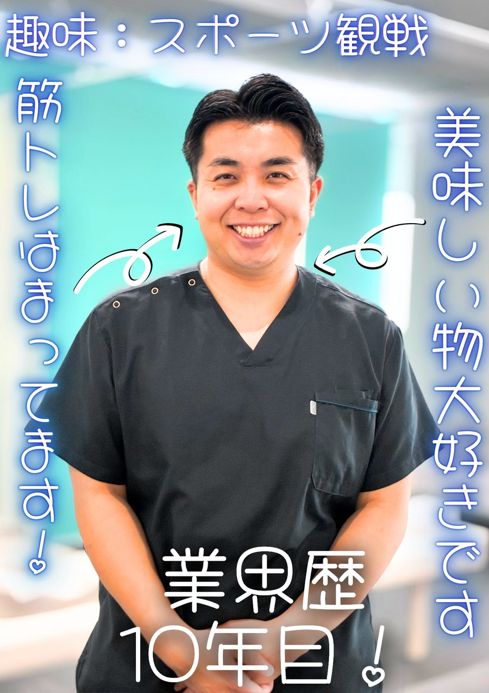
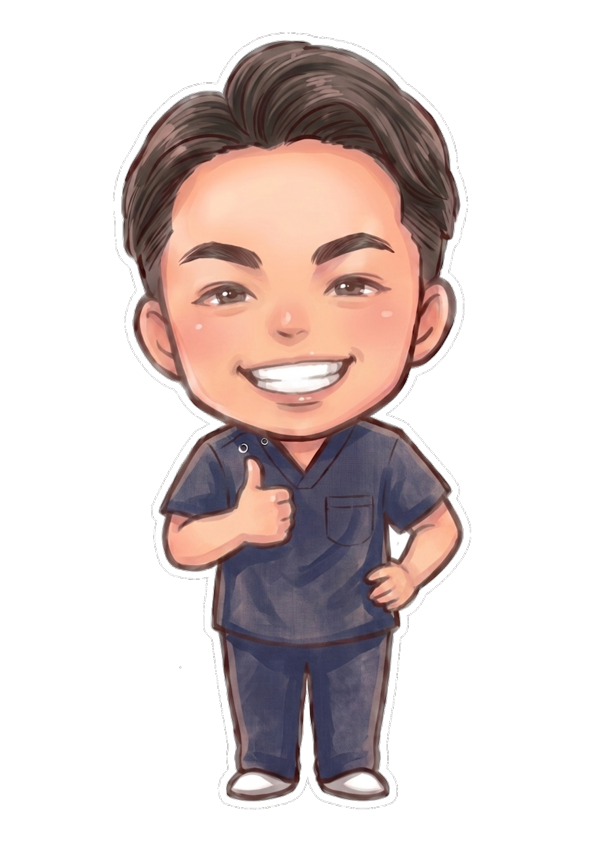
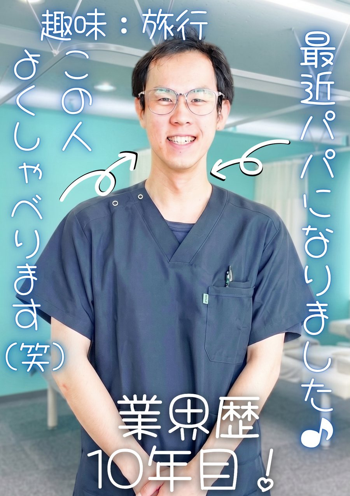
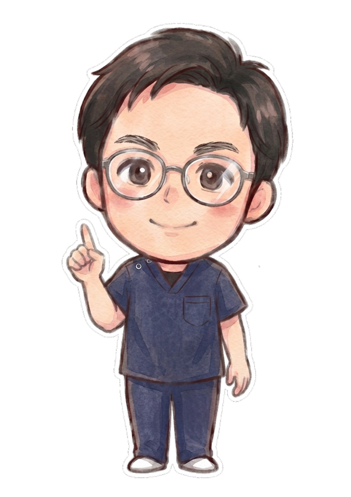
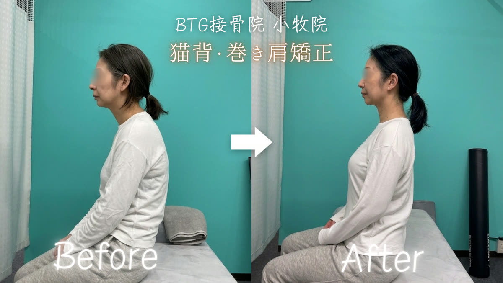
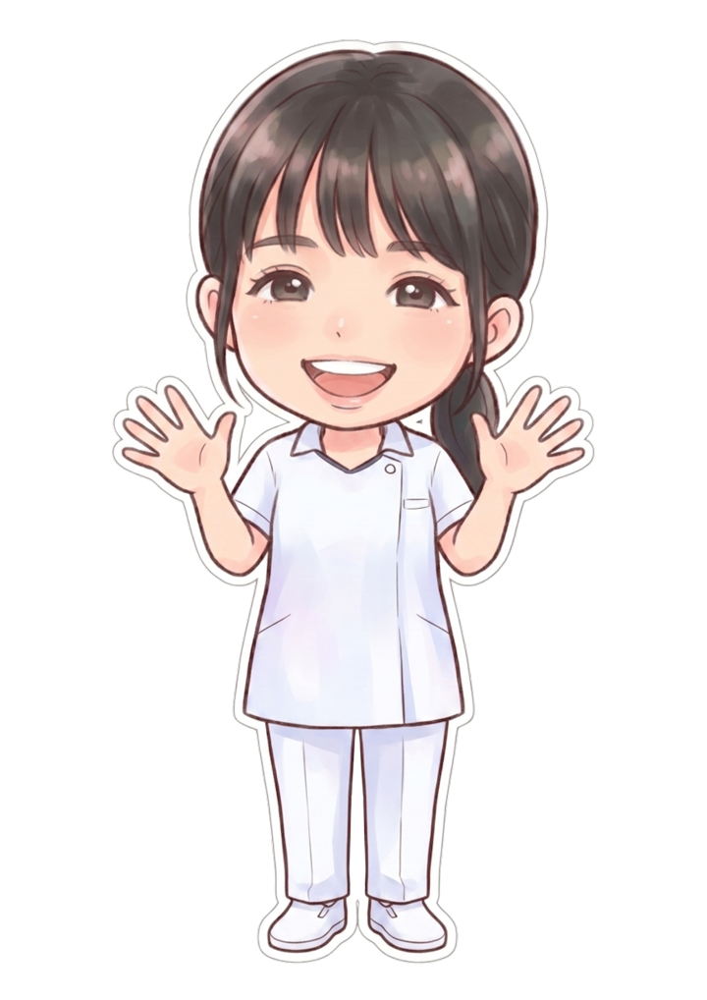
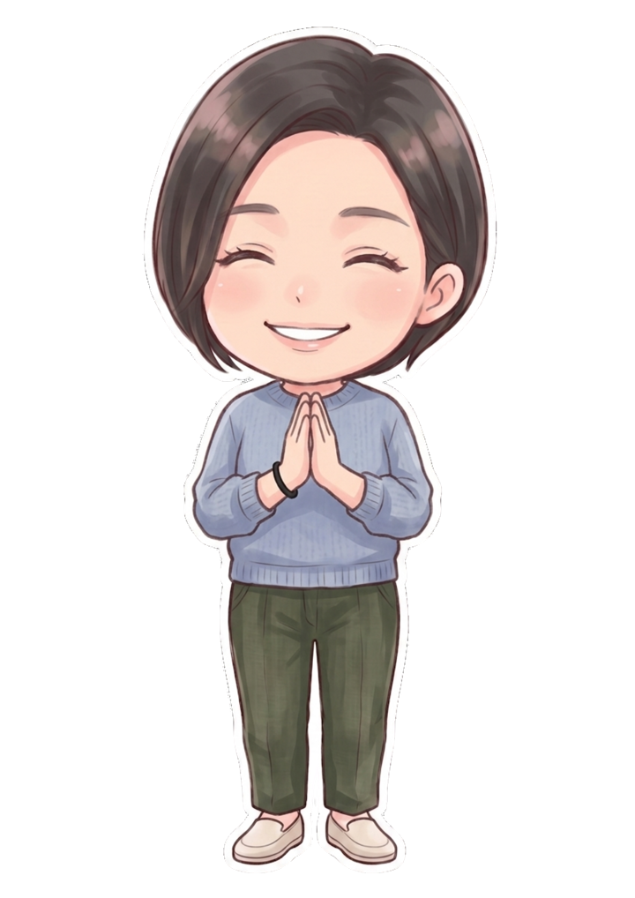
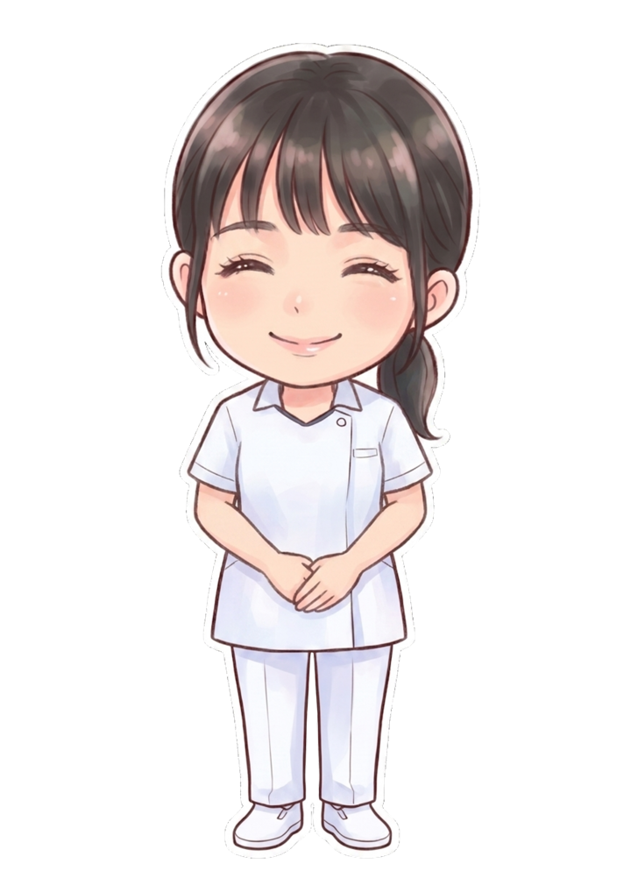

POSTURE & PELVIS CARE — KOMAKI
肩こり・腰痛・猫背・骨盤の歪み。院長経験者のみのスタッフが、不調の原因に向き合い、根本から改善へ導きます。
気になる症状をタップすると、原因と改善方法を詳しくご覧いただけます。
マッサージしても
すぐ戻る
長時間座るのが
つらい
薬に頼る毎日から
抜け出したい
デスクワークで
姿勢が崩れた
出産後、体型と不調が
気になる
スマホ首と
言われた
腕が上がらない
夜も痛む
お尻から脚への
しびれ・痛み

BTG接骨院 小牧院は、あなたの「これから」を整える場所です。
春日井・一宮で人気のBTGグループ、3店舗目が小牧に。
施術を担当するのは全員が院長経験者。圧倒的な経験と技術力で、他院で改善しなかったお悩みにも向き合います。
アクセスしやすい立地と専用駐車場で、お仕事帰りやお買い物ついでにも通いやすい環境です。
お子さま連れでも安心して施術を受けられます。産後骨盤矯正のママさんにも好評です。
待ち時間を最小限に、スムーズにご案内。LINE・WEB・お電話からかんたんにご予約いただけます。
その場しのぎではなく、姿勢分析から通院プラン・セルフケアまで、再発しない身体づくりを設計します。
国家資格を持つ院長経験者が、笑顔でお迎えします。


つらい痛みに親身に寄り添います。何でもご相談ください。


お一人おひとりの状態に合わせた丁寧な施術を心がけています。
実際に当院で施術を受けられたお客様の変化です。

※効果には個人差があります。
院長経験者だけのチームが、最初のカウンセリングから責任を持って向き合います。
初めての方も、安心してお越しください。

LINE・WEB・お電話から。当日予約も承ります。

お悩みや生活習慣を丁寧にヒアリングします。

姿勢や骨盤の歪みを確認し、原因をご説明します。

お一人おひとりに合わせたオーダーメイド施術。

セルフケアと通院プランをご提案します。
ティファニーブルーを基調とした、明るく清潔な空間です。
初めての方からよくいただくご質問をまとめました。
急性のケガ（ねんざ・肉離れ・ぎっくり腰など原因のはっきりした痛み）には各種健康保険をお使いいただけます。慢性的な肩こりや骨盤矯正・猫背矯正などは自費メニューでのご案内です。どちらになるかはカウンセリングで丁寧にご説明します。
予約優先制です。空きがあれば当日のご予約・ご来院も可能です。LINE・WEB（ホットペッパー）・お電話（0568-90-1841）からご予約いただけます。
動きやすい服装がおすすめですが、お仕事帰りのスーツやスカートでも大丈夫です。必要に応じてお着替えもご用意していますので、手ぶらでお越しください。
お身体の状態に合わせて力加減を調整しますのでご安心ください。ボキボキ整体はご希望の方にのみ行うメニューで、苦手な方にはソフトな矯正で対応します。
初期は週1〜2回、安定してきたら2週間に1回→月1回のメンテナンスへ移行するのが一般的です。初回の検査結果をもとに、あなた専用の通院プランをご提案します。
はい、キッズルーム・バウンサーを完備していますので、お子さま連れでも安心して施術を受けていただけます。産後骨盤矯正のママさんに多くご利用いただいています。
院の前に専用駐車場をご用意しています。国道41号沿い・小牧ICから車で約6分とお車でのアクセスも便利です。
はい。自賠責保険が適用される場合は窓口負担0円で施術を受けられます。保険会社とのやり取りのご相談もサポートし、交通事故施術は20:00まで受付を延長しています。

国道41号沿い、小牧ICから車で6分。駐車場完備です。
| 院名 | BTG接骨院 小牧院 |
|---|---|
| 住所 | 〒485-0058 愛知県小牧市小木1丁目112 プローグ小木Ⅱ 1階 |
| 電話 | 0568-90-1841 |
| 定休日 | 日曜・第2,4月曜・土曜午後 |
| 月 | 火 | 水 | 木 | 金 | 土 | 日 | |
|---|---|---|---|---|---|---|---|
| 9:30-12:30 | ● | ● | ● | ● | ● | ▲ | − |
| 15:00-19:30 | ● | ● | ● | ● | ● | − | − |
▲ 土曜は 9:30〜13:30 ／ 第2・第4月曜は休診 ／ 交通事故施術は20:00まで受付
春日井・一宮でも、同じ施術を受けていただけます。

「これくらいで行っていいのかな」という小さなお悩みも、大歓迎です。